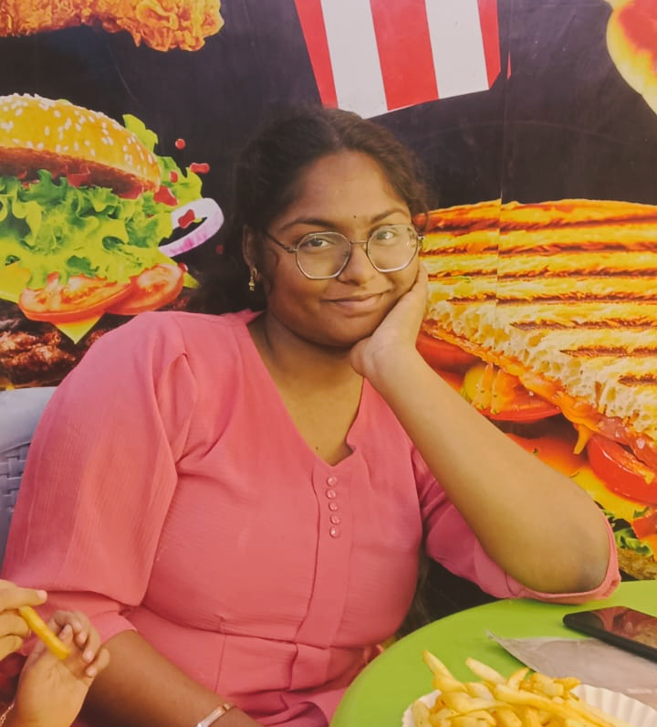
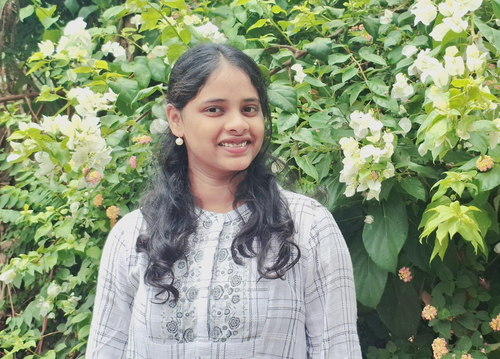

Harshitha Vegi
Full Stack Developer
Click to view profile

M Prakriti
System Engineer
Click to view profile
Jahnavi
Frontend Developer
Click to view profile

V. Aniela John
Full Stack Developer
Click to view profile
V. Priscilla John
Full Stack Developer
Click to view profile